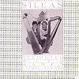

Celtic Lyrics Corner > Artists & Groups > Sìleas > Delighted With Harps > John Anderson My Jo
|  | John Anderson My Jo |
| Credits : | Traditional |
| Appears On : | Delighted With Harps |
| Language : | Scots-English |
Lyrics :
John Anderson, my jo, John
I wonder what you mean
To lie sae lang in the morning
And sit sae late at e'en
Ye'll bleer a' your een, John
And why should you do so?
Come sooner tae your bed at nicht
John Anderson, my jo
John Anderson, my jo, John
When that ye first began
Ye had as good a tail-tree
As any ither man
But now its waxen wan, John
And wrinkles to and fro
I've twa gae-ups for ae gae-doon
John Anderson, my jo
When ye begin to come, John
See that ye come your best
And when ye start to haud me
See that ye haud me fast
See that ye haud me fast, John
Until that I cry oh
Your back shall crack or I do that
John Anderson, my jo
John Anderson, my jo, John
Ye're welcome when you please
It's either in the warm bed
Or in aboon the claes
Or ye shall bear the horns, John
Upon your head to grow
And that's the cuckold's mallison
John Anderson, my jo